// The idea
Tyupkin (a.k.a. Backdoor.Padpin) showed up publicly around 2014. The concept is brutally simple: get physical access to an NCR APTRA ATM, install the binary, come back later with a session key, and the machine hands you cash directly from the cassette. No transaction. No card. Nothing in the banking system.
It's not complicated malware. What it is, is precise. Whoever built this understood the XFS SDK, knew how NCR machines are laid out, and was aware of the defensive software running on them. This is a tool made for one specific job — and it does that job quietly.
// Sample
- MD5
69be938abe7f28615d933d5ce155057c- SHA-1
bd8ab63f2544ca55858b6407e0b52d5494cf3715- SHA-256
853fb4e85d8b0ad7c156ad6d3fc4b0340c8b29fa0548a3df758e7845ba8b23ae- Family
- Tyupkin / Backdoor.Padpin
- Type
- Win32 PE (GUI) — ATM cash-out malware
- Target
- Windows / NCR APTRA XFS
- VT detections
- 60 / 72 — HybridAnalysis 100/100
- Compiled
- 2014-02-07 (PE timestamp)
- Packer
- None — plain binary, strings extractable in plaintext
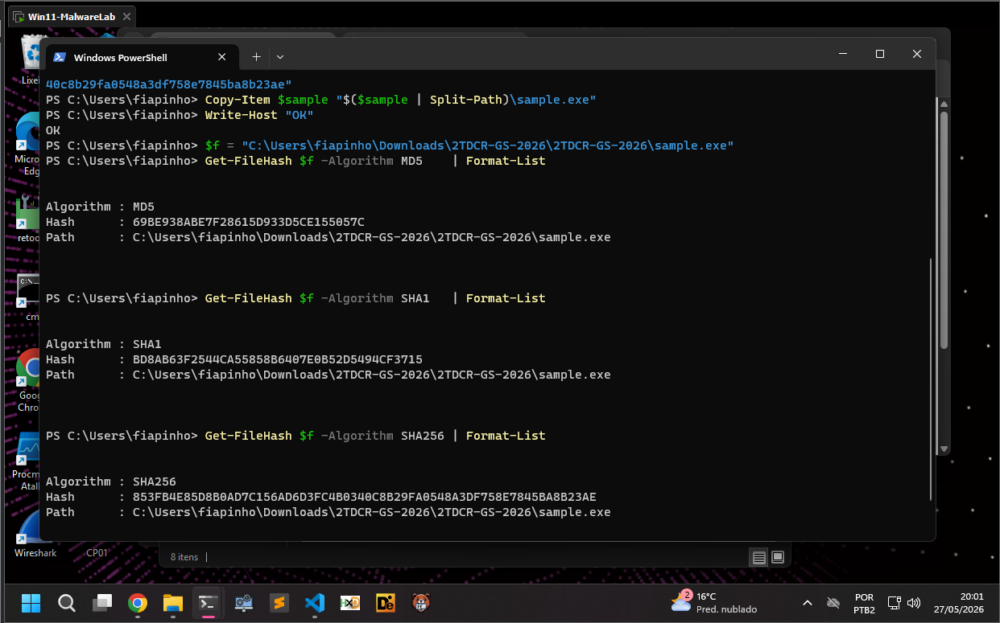
// Static analysis
First stop: PEstudio and DIE. No execution yet — just structure, imports, strings.
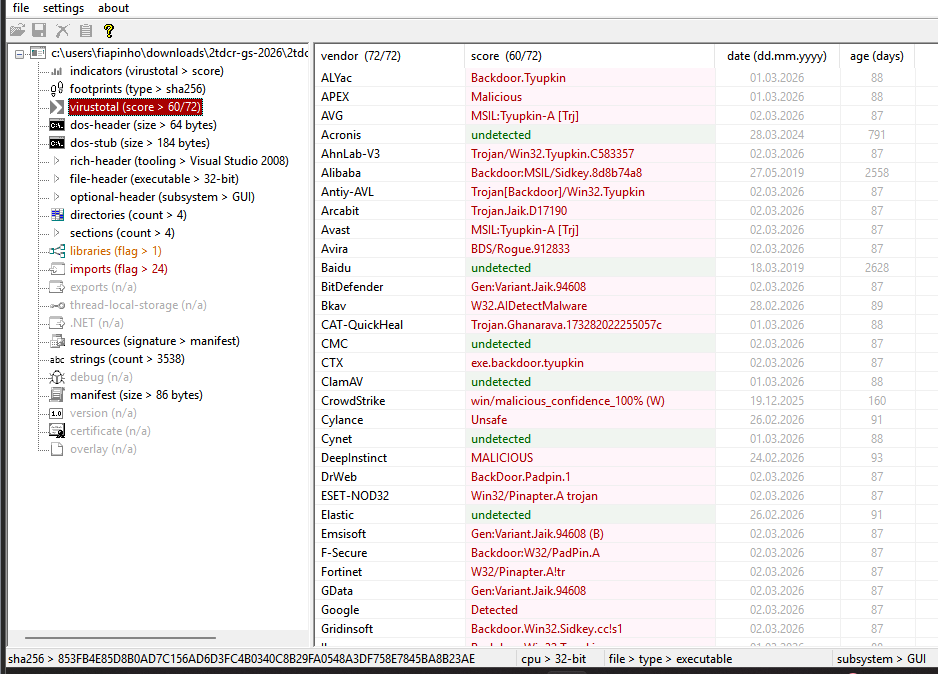
It's a PE32 for Windows (GUI, Intel i386), compiled with Visual Studio 2005. DIE flagged
high entropy in the first section as a heuristic but found no known packer signature.
No digital signature either. The PE timestamp is 2014-02-07 — lines up
with early public reports, but timestamps are trivially fakeable so take that for what it's worth.
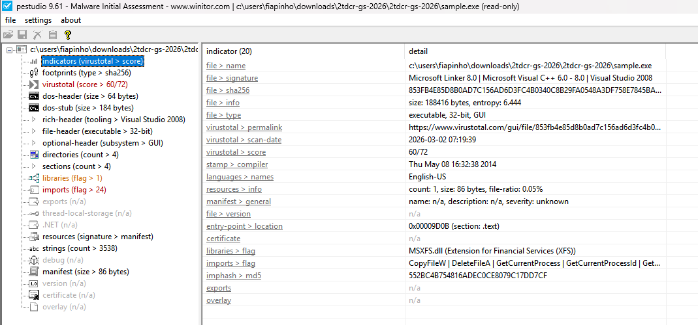
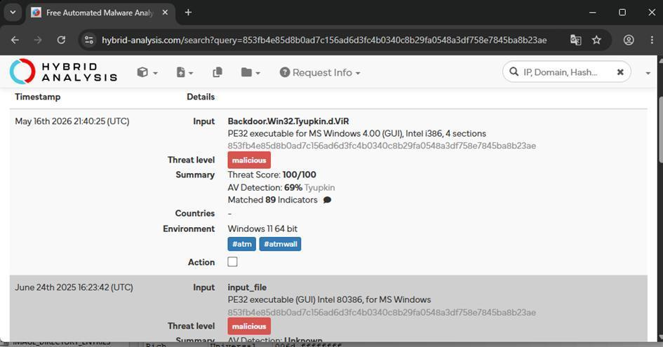
The import that says everything
One entry in the import table tells you exactly what this binary is for:
MSXFS.dll — NCR's proprietary CEN/XFS library for the Cash Dispenser Module.
This DLL does not exist on standard Windows. Seeing it in the import table of an unknown
binary is about as subtle as a bank robbery note. Everything else in the imports
(kernel32, user32, advapi32) is boring by comparison.
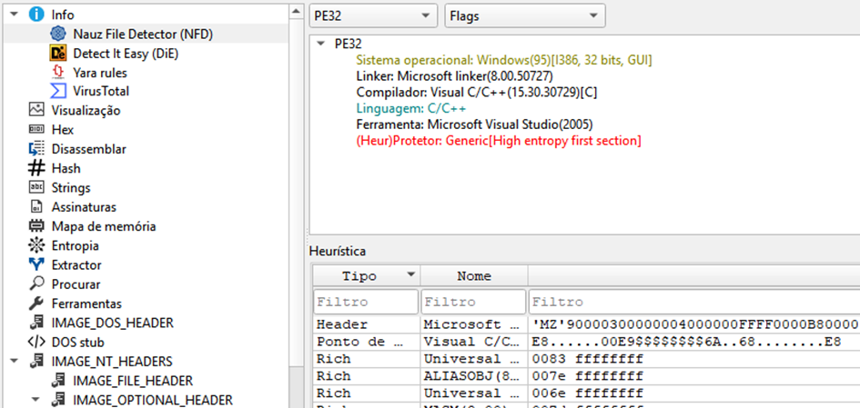
Strings: the malware talking to itself
Because it's not packed, strings dump cleanly into two groups. First: the operator cash-out menu — what the attacker reads off the ATM screen while draining it.
strings — operator UIDISPENSE OPERATION DENIED. ENTER SESSION KEY.
DISPENSE PERMISSION GRANTED
DISPENSING %i BANKNOTES.
CASH OPERATION FINISHED.
Money dispensed! You can now take your money
CONNECTING TO PIN PAD...
ENTER CASSETTE NUMBER AND PRESS ENTER.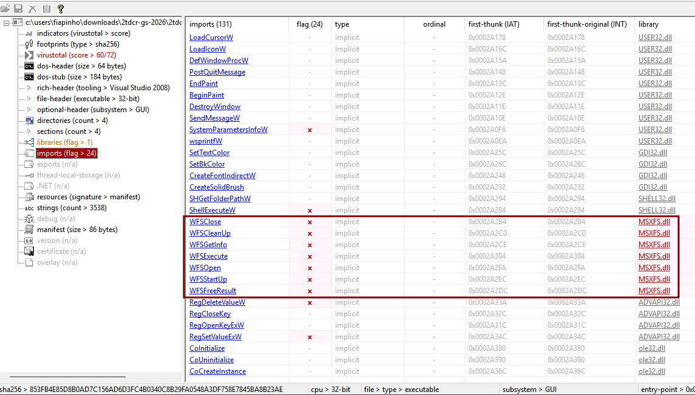
Second group is the evasion and control machinery:
strings — control & evasion/C ping 127.0.0.1 -n 8 & del /F /S /Q
Software\Microsoft\Windows\CurrentVersion\Run
\ulssm.exe
WOSA/XFS_ROOT\LOGICAL_SERVICES
netshell.dll
Local Area Connection
C:\program files\ncr aptra\Solidcore for APTRA\Logs\solidcore.log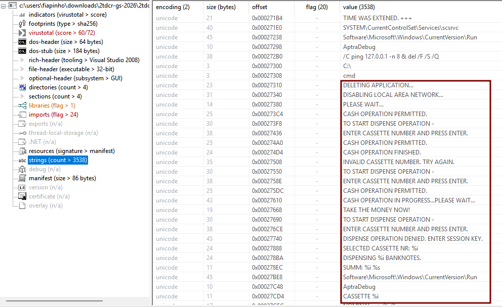
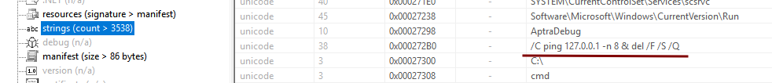
ping -n 8 isn't pinging anything — it's a DIY 8-second timer so the process can exit before del runs.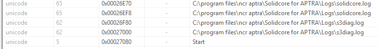
That Solidcore for APTRA reference is worth sitting on. Solidcore is NCR's
application control solution — the thing meant to prevent unauthorized executables from
running. Someone put that path in there on purpose.
// CAPA + dynamic
CAPA analyzed 297 functions and immediately flagged the category
targeting/automated-teller-machine/ncr — 7 functions hitting NCR ATM
routines between 0x41D6B0 and 0x41F430. Function
0x41B960 is the workhorse: it handles Run key persistence, Windows
Service creation, self-delete, and registry cleanup all in one place. Install and
uninstall, same function, minimal footprint.
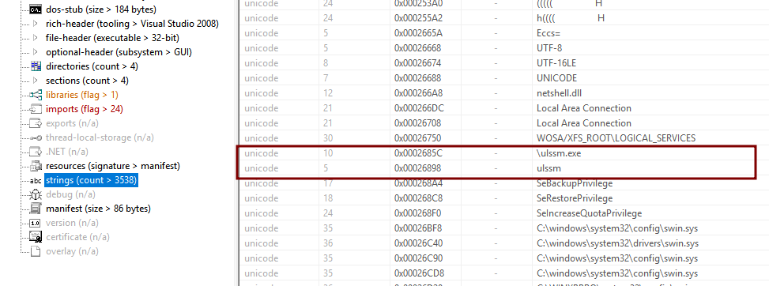
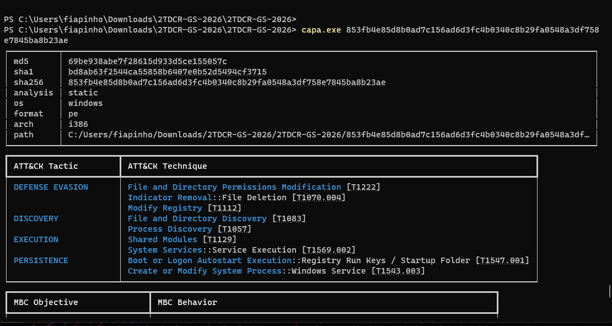
For dynamic analysis: Wireshark captured 460 packets, 25 from the analysis host — all background Windows traffic (MDNS, LLMNR, DHCP, NBNS). Zero C2. Zero HTTP. Zero anything. Tyupkin doesn't talk to the internet. It doesn't need to.
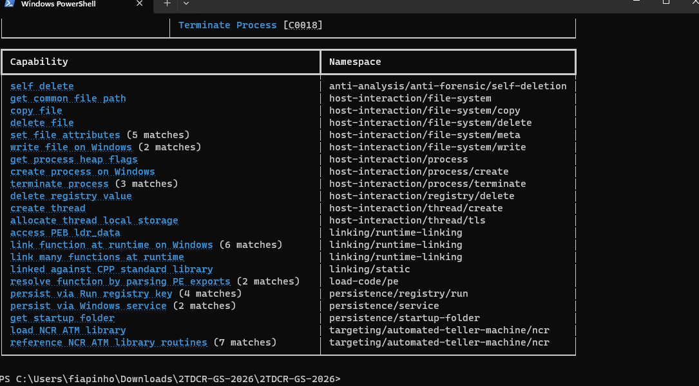
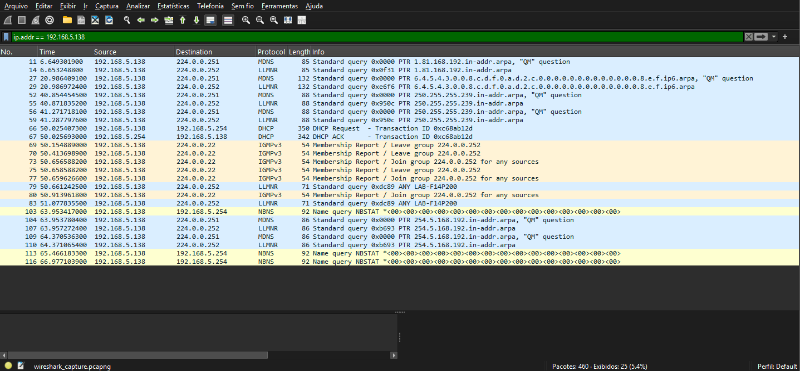
Without MSXFS.dll on the system, the malware just walks every directory in the PATH
looking for it, gets NAME NOT FOUND at each step, and exits cleanly.
No files, no registry writes. Also makes it invisible to sandboxes that don't emulate
ATM hardware — they'll see a clean exit and call it benign.
sample.exe QueryNameInformationFile C:\Windows\MSXFS.dll NAME NOT FOUND
sample.exe QueryNameInformationFile C:\Windows\System32\MSXFS.dll NAME NOT FOUND
sample.exe QueryNameInformationFile C:\Windows\SysWOW64\MSXFS.dll NAME NOT FOUND
...
sample.exe Process Exit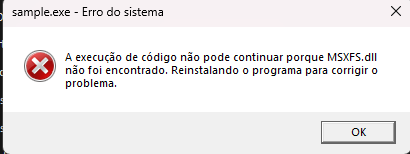
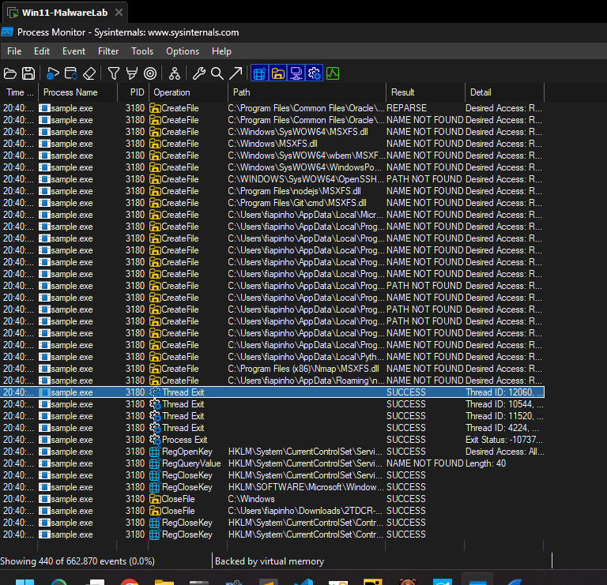
Three evasion tricks worth knowing
1 — Cut the wire first: Before dispensing cash, it loads
netshell.dll and kills the "Local Area Connection" interface.
No network = no remote monitoring, no security updates, no alerts.
2 — ICMP as a timer: Post-operation, it runs
ping 127.0.0.1 -n 8 & del /F /S /Q [file]. Eight ICMP replies ≈ 8 seconds,
which is enough time for the parent to exit and release the file handle before the
delete runs. Dead simple. Works every time.
3 — Session key: The cash-out menu won't respond without a key derived from the current day of the week. Even with physical access to a running machine, you can't use the interface without knowing the key. The attacker's backdoor has its own access control.
persistence registry keyHKCU\Software\Microsoft\Windows\CurrentVersion\Run
ulssm = C:\Windows\System32\ulssm.exe
The name ulssm.exe is designed to look like a system service. On an ATM
running Windows, nobody is watching the process list.
// The punchline
Tyupkin doesn't exploit a vulnerability. It calls WFSExecute with a
CDM command, and the ATM dispenses cash. That's it. The XFS API was never designed
with the assumption that an attacker would be running processes on the machine —
so there's no authentication between a process and the hardware. The vulnerability
isn't a bug in NCR's code. It's a design assumption that never held.

// IOCs
hashesMD5: 69be938abe7f28615d933d5ce155057c
SHA-1: bd8ab63f2544ca55858b6407e0b52d5494cf3715
SHA-256: 853fb4e85d8b0ad7c156ad6d3fc4b0340c8b29fa0548a3df758e7845ba8b23aeulssm[.]exe
HKCU\Software\Microsoft\Windows\CurrentVersion\Run\ulssm
WOSA/XFS_ROOT\LOGICAL_SERVICESDISPENSE OPERATION DENIED. ENTER SESSION KEY.
Money dispensed! You can now take your money
ping 127[.]0[.]0[.]1 -n 8 & del /F /S /Q
Solidcore for APTRA
MSXFS[.]dll
netshell[.]dll// MITRE ATT&CK
ATMs run Windows but control physical hardware — which means ICS techniques apply alongside Enterprise.
enterpriseT1547.001 Registry Run Keys → ulssm.exe persistence
T1070.004 File Deletion → ping -n 8 ICMP delay + del
T1129 Shared Modules → MSXFS.dll dynamic load (PATH walk)
T1543.003 Windows Service → dual persistence via CAPA 0x41B960
T1112 Modify Registry → install/cleanup at 0x41B960, 0x41D480
T1562.001 Impair Defenses → netshell.dll disables NIC
T1083 File/Directory Discovery → PATH walk for MSXFS.dllT0834 Native API → WFSStartUp, WFSExecute, WFSGetInfo direct calls
T0829 Loss of View → CDM dispenses cash bypassing transaction flow// Detection rules
YARA
yararule Tyupkin_Padpin_ATM_CashOut {
meta:
description = "Detects Tyupkin/Backdoor.Padpin ATM cash-out malware"
date = "2026-05-25"
hash_sha256 = "853fb4e85d8b0ad7c156ad6d3fc4b0340c8b29fa0548a3df758e7845ba8b23ae"
family = "Tyupkin"
mitre = "T1547.001, T1070.004, T1129, T0834, T0829"
strings:
$ui_deny = "DISPENSE OPERATION DENIED. ENTER SESSION KEY." ascii wide
$ui_grant = "DISPENSE PERMISSION GRANTED" ascii wide
$ui_money = "Money dispensed! You can now take your money" ascii wide
$ui_disp = "DISPENSING %i BANKNOTES." ascii wide
$ui_pin = "CONNECTING TO PIN PAD..." ascii wide
$ui_cassette = "ENTER CASSETTE NUMBER AND PRESS ENTER." ascii wide
$ui_finish = "CASH OPERATION FINISHED." ascii wide
$xfs_nocash = "WFS_ERR_CDM_NOCASHBOXPRESENT" ascii
$xfs_nodisp = "WFS_ERR_CDM_NOTDISPENSABLE" ascii
$xfs_init = "Error executing startup XFS." ascii
$xfs_exec = "Err executing WFSExecute with code:" ascii
$xfs_pin = "WFS_ERR_PIN_KEYINVALID:" ascii
$selfdelete = "ping 127.0.0.1 -n 8 & del /F /S /Q" ascii
$persist = "ulssm.exe" ascii wide
$aptra = "Solidcore for APTRA" ascii wide
$xfsreg = "WOSA/XFS_ROOT" ascii
condition:
uint16(0) == 0x5A4D and filesize < 600KB and
(
3 of ($ui_*) or
($xfs_init and (1 of ($ui_*) or $persist)) or
($selfdelete and $persist and 1 of ($xfs_*)) or
(2 of ($xfs_*) and $aptra) or
($xfsreg and $persist and 1 of ($xfs_*))
)
}Sigma
Three rules, one per mechanism. Convert with sigma-cli.
title: Tyupkin ATM Malware — Run Key Persistence
id: b1a2c3d4-e5f6-7890-abcd-ef1234567890
status: stable
description: Detects Tyupkin persistence via Run key pointing to ulssm.exe
author: m4gicxleep
date: 2026/05/25
tags:
- attack.persistence
- attack.t1547.001
logsource:
category: registry_set
product: windows
detection:
selection:
TargetObject|contains: '\Software\Microsoft\Windows\CurrentVersion\Run'
Details|contains: 'ulssm.exe'
condition: selection
level: critical
falsepositives:
- None expectedtitle: Tyupkin ATM Malware — ICMP-Delayed Self-Delete
id: c2b3d4e5-f6a7-8901-bcde-f12345678901
status: stable
description: cmd.exe child with ping+del chain — Tyupkin antiforensic pattern
author: m4gicxleep
date: 2026/05/25
tags:
- attack.defense_evasion
- attack.t1070.004
logsource:
category: process_creation
product: windows
detection:
selection:
ParentImage|endswith: '\cmd.exe'
CommandLine|contains|all:
- 'ping 127.0.0.1'
- 'del /F /S /Q'
condition: selection
level: high
falsepositives:
- Unlikelytitle: Tyupkin ATM Malware — MSXFS.dll Load by Non-NCR Process
id: d3c4e5f6-a7b8-9012-cdef-123456789012
status: stable
description: MSXFS.dll loaded outside standard ATM vendor paths
author: m4gicxleep
date: 2026/05/25
tags:
- attack.execution
- attack.t1129
logsource:
category: image_load
product: windows
detection:
selection:
ImageLoaded|endswith: '\MSXFS.dll'
filter_legitimate:
Image|contains:
- '\NCR\'
- '\Diebold\'
- '\Wincor\'
- '\KAL\'
condition: selection and not filter_legitimate
level: high
falsepositives:
- New ATM vendor not covered by filter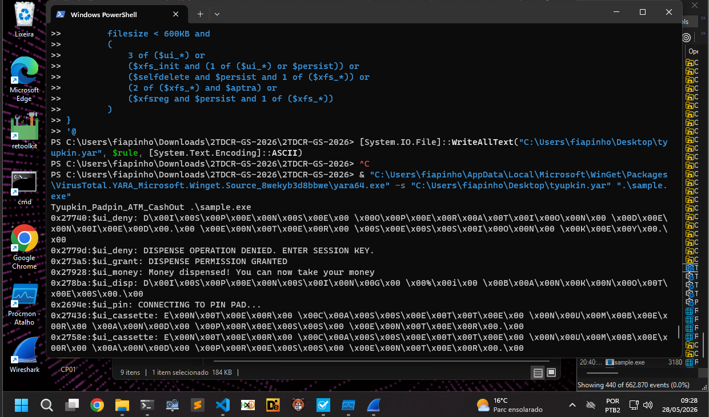
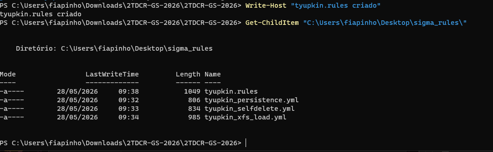
Snort
Tyupkin generates no C2 traffic, so these rules alert on anything unexpected going out from an ATM.
snortalert tcp $ATM_NET any -> !$AUTHORIZED_SERVERS any (
msg:"ATM_ANOMALY Unexpected outbound TCP from ATM";
flow:established,to_server; sid:9000001; rev:1;
)
alert udp $ATM_NET any -> any 53 (
msg:"ATM_ANOMALY DNS query from ATM network";
sid:9000002; rev:1;
)
alert icmp $ATM_NET any -> any any (
msg:"ATM_ANOMALY ICMP from ATM (possible self-delete delay)";
itype:8; sid:9000003; rev:1;
)// If you're hunting for this
Scan every NCR APTRA for ulssm.exe in running processes and in the Run key.
Anything there that's not NCR-signed is a problem. Lock down WOSA/XFS_ROOT
via ACLs so only vendor-signed processes can touch it, add FIM on the ATM filesystem,
and — this one people forget — treat physical access to the cabinet as part of your
attack surface. Tyupkin requires someone to plug in a USB. Tamper seals and access logs
exist for a reason.
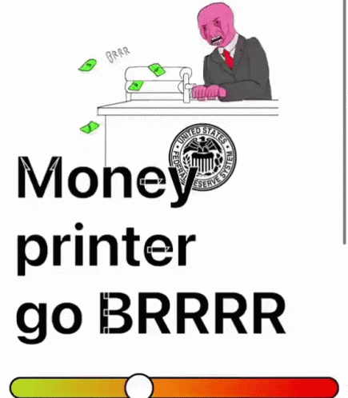
// What I took from this
The deeper lesson isn't really about Tyupkin specifically — it's about what happens
when hardware APIs are designed without adversarial users in mind. WFSExecute
was built to let ATM software talk to the dispenser. Tyupkin just… also talks to the
dispenser. Same API. The machine doesn't know the difference.
In OT and ICS environments, that pattern shows up constantly. The attack surface isn't a bug. It's the gap between who the system was designed for and who ends up using it. Defense in that world isn't about blocking known-bad signatures — it's about controlling who can even make the call in the first place.
// Appendix — PE entropy
All PE sections sit below 7.2 — normal compiled code, not packed. That's why string extraction worked cleanly from the start.
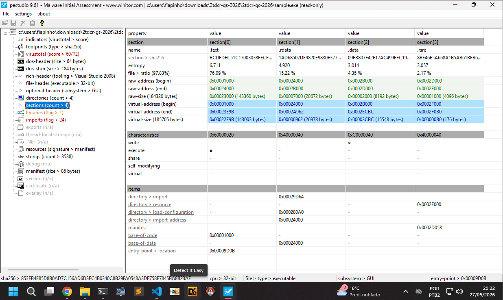